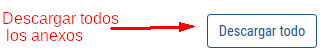
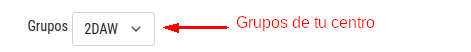

Esto es una ayuda para poder manejar la lista de Anexos
Si eres Tutor, Jefe de estudios o Director:
- Este sería el boton de ayuda
- Con este botón podras descargar todos los anexos que estan activos en la tabla 
- Con este botón podras descargar un anexo en concreto, el que se muestra en la linea de la tabla donde se encuentre el botón
- Con este botón podras firmar un anexo en concreto, el que se muestra en la linea de la tabla donde se encuentre el botón
- Con este botón podras eliminar un anexo en concreto, el que se muestra en la linea de la tabla donde se encuentre el botón
- Este campo nos muestra si la empresa ha firmado ese anexo, una linea es No, un check es Si
- Este campo nos muestra si el centro de estudios ha firmado ese anexo, una linea es No, un check es Si
- Este campo nos muestra el tipo de Anexo
- Este campo nos muestra la empresa asociada a ese Anexo
Explicación de los botones:


Explicación de los campos:


Solo si eres Director o Jefe de estudios:
- Esto sería una lista con los grupos vigentes en tu centro 